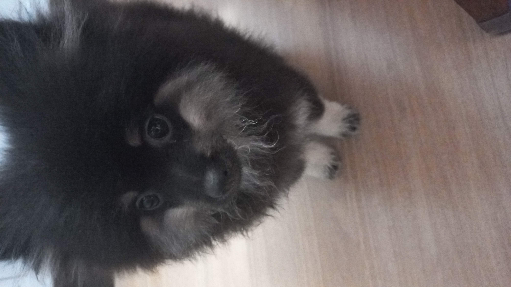
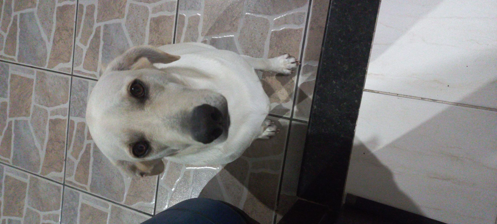
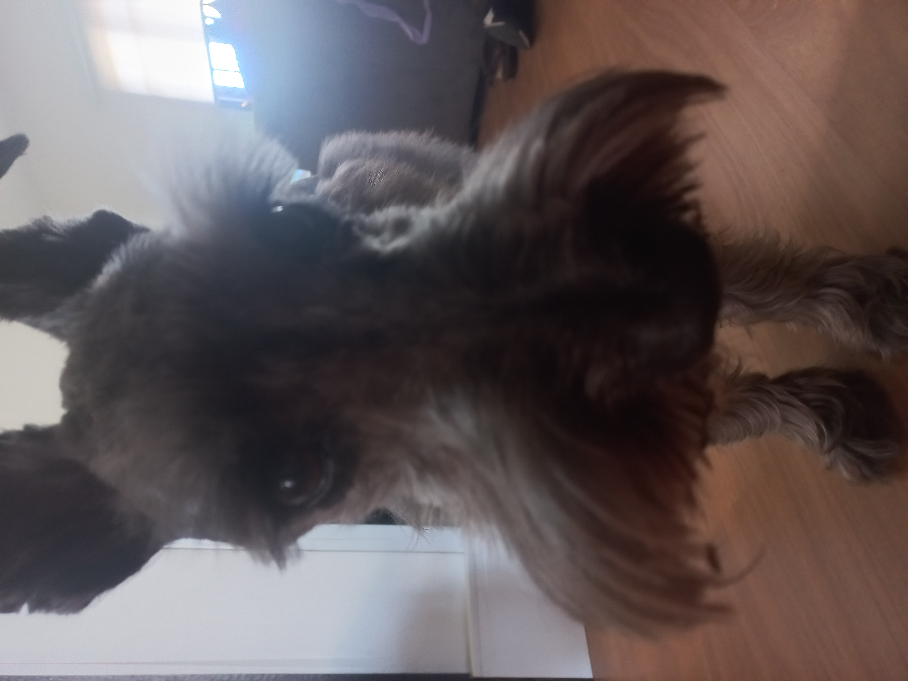
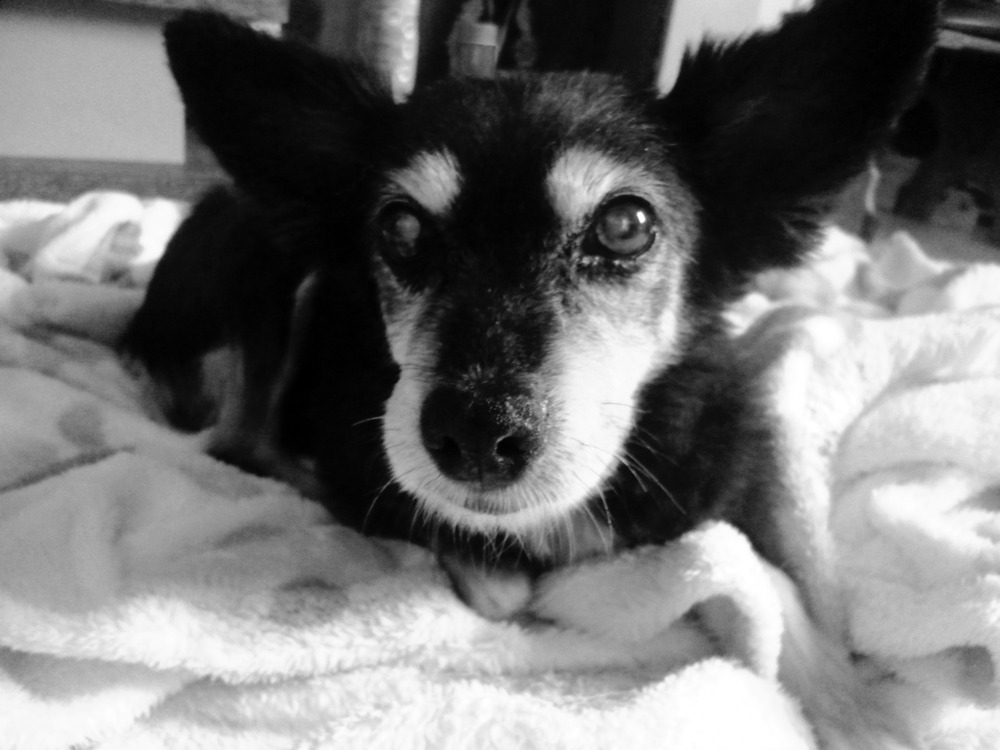

o Paçoca é o meu pet mais novo,é um spitz alemão, ele passa mais tempo pulando que andando e fazendo bagunça com o Odin, ele herdou o título de bagunceiro do Odin

o Odin é o do meio,ele é um labrador, passou de um filhote que fazia bagunça sozinho, para um adulto que faz bagunça com o Paçoca, ele adora água e é bem calmo sem influência do Paçoca

o Tedi é velho, velho, muito velho, eu acredito que ele já era um velho rabugento desde o começo dos tempos, ele gosta de paz e sossego (o que é inatingível perto do Paçoca e do Odin) porém, quando ele relembra a infância gosta de brincar com o Paçoca.

o que dizer dela..., a Gorda foi meu primeiro animal de estimação, desde que eu me entendo por gente, a gente praticamente cresceu juntos, você faz falta pra mim 🥹.